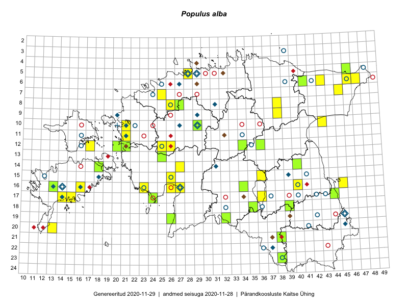

Populus alba — hõbehaab
Salicaceae :: Populus alba L. (146)

Kaart põhineb 154 kirjel:
vaatlusi 76
herbaareksemplare 70
PKÜ kirjeid1 8
Taime kaasaegsed ja ajaloolised leiukohad asuvad 86 ruudus.
Tingmärgid ja ruutude arvud periooditi (U2 / V3 )
█ 2006–2020 (48/–)
◆/◇ 1971–2005 (19/36)
○ 1921–1970 (33/37)
+ kuni 1920 (1/0)
× hävinud (–/0)
? kaheldav (–/0)
| Ruut | Leidja(d) | Leiuaeg | Kirje |
|---|---|---|---|
| 12-16 | Haide-Ene Rebassoo | 1957–1984 | ruut/ala: Populus alba L. |
| 22-37 | H. Krall, E. Krall | 1983-07-22 | ruut/ala: Populus alba L. |
| 08-31 | botaaniline ekspeditsioon ZBI | 1987-06-27 | ruut/ala: Populus alba L. |
| 09-29 | 1976-08 | ruut/ala: Populus alba L. | |
| 10-21 | T. Kukk | 1994-05-21 | ruut/ala: Populus alba L. |
| 14-31 | T. Kukk, M. Leht, H. Krall, T. Ploompuu | 1999-06-11–1999-06-22 | ruut/ala: Populus alba L. |
| 15-18 | Toomas Kukk | 1998-06-24 | ruut/ala: Populus alba L. |
| 16-27 | T. Kukk | 1998-07-05–1998-07-08 | ruut/ala: Populus alba L. |
| 17-14 | M. Kask, L. Laasimer | 1977-08 | ruut/ala: Populus alba L. |
| 19-45 | Ülo Niinemets | 1987 | ruut/ala: Populus alba L. |
| 20-45 | T. Kukk, T. Ploompuu | 1992-07-06–1998-05-17 | ruut/ala: Populus alba L. |
| 09-20 | Toomas Kukk, Elle Roosaluste, Mare Leis | 1993-07-17–1998-09-20 | ruut/ala: Populus alba L. |
| 06-43 | Tiit Hallikma, Toomas Kukk | 2015-05-30 | ruut/ala: Populus alba L. |
| 07-45 | Ott Luuk, Hannes Pehlak | 2015-07-22 | ruut/ala: Populus alba L. |
| 06-41 | Toomas Kukk, Peedu Saar | 2014-09-12 | ruut/ala: Populus alba L. |
| 13-25 | Indrek Tammekänd, Katrin Aavik | 2015-06-15 | ruut/ala: Populus alba L. |
| 05-28 | Erkki Otsman, Sergei Smirnov | 2015-06-26–2015-07-06 | ruut/ala: Populus alba L. |
| 21-38 | Eeva-Maria Jeletsky, Tarmo Niitla | 2015-08-12 | ruut/ala: Populus alba L. |
| 18-39 | Kai Rünk, Ülle Jõgar, Illi Tarmu | 2015-05-19 | ruut/ala: Populus alba L. |
| 15-36 | Toivo Sepp, Eerik Leibak | 2015-05-13 | ruut/ala: Populus alba L. |
| 16-13 | Mari Reitalu, Oliver Parrest | 2015-07-27 | ruut/ala: Populus alba L. |
| 15-36 | Toivo Sepp, Eerik Leibak | 2015-05-13 | ruut/ala: Populus alba L. |
| 18-39 | Kai Rünk, Ülle Jõgar, Illi Tarmu | 2015-05-19 | ruut/ala: Populus alba L. |
| 17-14 | Sirje Azarov, Mari Reitalu | 2015-04-27 | ruut/ala: Populus alba L. |
| 17-14 | Sirje Azarov, Mari Reitalu | 2015-05-27 | ruut/ala: Populus alba L. |
| 20-13 | Oliver Parrest | 2015-08-15 | ruut/ala: Populus alba L. |
| 09-38 | Karin Kikas, Elle Rajandu | 2015-06-01–2016-06-03 | ruut/ala: Populus alba L. |
| 09-38 | Karin Kikas, Elle Rajandu | 2015-06-01–2015-06-03 | ruut/ala: Populus alba L. |
| 12-25 | Aat Sarv | 2015-05-27 | ruut/ala: Populus alba L. |
| 08-38 | Karin Kikas, Elle Rajandu | 2015-06-02–2015-06-03 | ruut/ala: Populus alba L. |
| 08-38 | Karin Kikas, Elle Rajandu | 2015-06-02–2015-06-03 | ruut/ala: Populus alba L. |
| 16-13 | Mari Reitalu, Oliver Parrest | 2015-07-27 | ruut/ala: Populus alba L. |
| 17-15 | Karin Kikas, Elle Rajandu | 2015-07-22 | ruut/ala: Populus alba L. |
| 17-15 | Karin Kikas, Elle Rajandu | 2015-07-22 | ruut/ala: Populus alba L. |
| 18-35 | Helle Mäemets, Mare Leis | 2015-06-24 | ruut/ala: Populus alba L. |
| 15-36 | Helle Mäemets, Mare Leis | 2015-07-06 | ruut/ala: Populus alba L. |
| 17-36 | Helle Mäemets, Mare Leis, Malle Timm | 2015-06-25 | ruut/ala: Populus alba L. |
| 17-36 | Malle Timm | 2015-08-07 | ruut/ala: Populus alba L. |
| 17-36 | Malle Timm | 2015-08-12 | ruut/ala: Populus alba L. |
| 11-21 | Hanna-Eliisa Luts, Tõnu Ploompuu | 2015-08-13 | ruut/ala: Populus alba L. |
| 08-26 | Aat Sarv | 2015-08-13 | ruut/ala: Populus alba L. |
| 18-35 | Helle Mäemets, Mare Leis | 2015-06-24 | ruut/ala: Populus alba L. |
| 12-26 | Andrus Jair, Tõnu Ploompuu | 2015-05-17 | ruut/ala: Populus alba L. |
| 23-38 | Rein Kalamees, Eerik Leibak | 2016-06-16 | ruut/ala: Populus alba L. |
| 12-21 | Liina Oja, Rein Kalamees | 2016-07-05 | ruut/ala: Populus alba L. |
| 06-46 | Erkki Otsman, Sergei Smirnov | 2016-06-17–2016-06-18 | ruut/ala: Populus alba L. |
| 14-40 | Karin Kikas, Elle Rajandu | 2016-07-01 | ruut/ala: Populus alba L. |
| 14-18 | Sirje Azarov, Mari Reitalu | 2016-08-09 | ruut/ala: Populus alba L. |
| 06-46 | Erkki Otsman, Sergei Smirnov | 2016-06-17–2016-06-18 | ruut/ala: Populus alba L. |
| 07-25 | Helle Mäemets, Tiina Elvisto | 2016-07-05 | ruut/ala: Populus alba L. |
| 07-25 | Helle Mäemets, Tiina Elvisto | 2016-07-05 | ruut/ala: Populus alba L. |
| 16-40 | Peedu Saar | 2016-05-22 | ruut/ala: Populus alba L. |
| 05-28 | Kadi-Liis Kesler, Tiina Elvisto | 2015-05-12–2015-06-05 | ruut/ala: Populus alba L. |
| 16-40 | Peedu Saar | 2016-05-22 | ruut/ala: Populus alba L. |
| 05-46 | Kadi-Liis Kesler, Tiina Elvisto | 2015-07-30 | ruut/ala: Populus alba L. |
| 12-20 | Meeli Mesipuu, Maret Gerz | 2015-08-25 | ruut/ala: Populus alba L. |
| 10-43 | Hannes Pehlak, Ott Luuk | 2016-07-29 | ruut/ala: Populus alba L. |
| 19-32 | Jaak-Albert Metsoja, Mari Metsoja, Lena Neuenkamp | 2016-07-18 | ruut/ala: Populus alba L. |
| 16-16 | Mari Reitalu | 2006-07-13 | ruut/ala: Populus alba L. |
| 16-27 | Indrek Tammekänd | 2015-07-24 | ruut/ala: Populus alba L. |
| 16-26 | Indrek Tammekänd | 2016-10-03 | ruut/ala: Populus alba L. |
| 05-28 | Kadi-Liis Kesler | 2015-05-12 | ruut/ala: Populus alba L. |
| 12-26 | Andrus Jair, Tõnu Ploompuu | 2015-05-17 | ruut/ala: Populus alba L. |
| 12-26 | Andrus Jair, Tõnu Ploompuu | 2015-05-17 | ruut/ala: Populus alba L. |
| 16-23 | Indrek Tammekänd, Eike Vunk | 2017-07-20 | ruut/ala: Populus alba L. |
| 12-17 | Toomas Kukk, Indrek Tammekänd | 2017-09-11 | ruut/ala: Populus alba L. |
| 12-17 | Toomas Kukk, Indrek Tammekänd | 2017-09-11 | ruut/ala: Populus alba L. |
| 08-38 | Peedu Saar, Ott Luuk | 2017-07-18 | ruut/ala: Populus alba L. |
| 08-38 | Ott Luuk, Peedu Saar | 2017-07-18 | ruut/ala: Populus alba L. |
| 05-46 | Toomas Kukk, Thea Kull | 2019-09-11 | ruut/ala: Populus alba L. |
| 06-47 | Peedu Saar, Timo Luhamäe | 2019-09-12 | ruut/ala: Populus alba L. |
| 05-46 | Thea Kull, Toomas Kukk | 2019-09-11 | ruut/ala: Populus alba L. |
| 10-21 | Ott Luuk | 2019-09-19 | ruut/ala: Populus alba L. |
| 15-26 | Indrek Tammekänd | 2019-06-05 | ruut/ala: Populus alba L. |
| 14-27 | Ott Luuk, Indrek Tammekänd | 2017-08-11 | ruut/ala: Populus alba L. |
| 16-45 | Ott Luuk | 2019-06-07 | ruut/ala: Populus alba L. |
| 15-26 | Agnes Ojaveer | 1962-08-02 | TAA0097253: Populus alba L. |
| 15-26 | Agnes Ojaveer | 1962-08-02 | TAA0097254: Populus alba L. |
| 17-40 | Alma Saare, Silvia Talts | 1962-06-20 | TAA0097256: Populus alba L. |
| 06-42 | Vilma Kuusk, Alma Saare | 1961-06-30 | TAA0097257: Populus alba L. |
| 19-42 | Maret Kask | 1960-06-15 | TAA0097258: Populus alba L. |
| 07-24 | Kai Lang, Tiiu Sütt | 1960-07-26 | TAA0097259: Populus alba L. |
| 10-22 | Agnes Ojaveer, Ella Tammemägi | 1960-07-21 | TAA0097260: Populus alba L. |
| 11-34 | Linda Viljasoo | 1956-08-09 | TAA0097261: Populus alba L. |
| 12-16 | H. Tamm | 1956-06-24 | TAA0097263: Populus alba L. |
| 23-38 | Vilma Kuusk, Tiiu Keskpaik, Haide-Ene Rebassoo | 1957-08-10 | TAA0097265: Populus alba L. |
| 17-43 | H. Tamm | 1957-06-04 | TAA0097266: Populus alba L. |
| 22-36 | Viive Kõvask, Ella Tammemägi | 1957-08-20 | TAA0097267: Populus alba L. |
| 17-37 | Alma Saare, S. Pärn | 1962-07-02 | TAA0097268: Populus alba L. |
| 17-37 | Alma Saare, S. Pärn | 1962-07-02 | TAA0097269: Populus alba L. |
| 18-36 | H. Tamm | 1962-06-19 | TAA0097270: Populus alba L. |
| 06-46 | Agnes Ojaveer, H. Tamm | 1961-08-08 | TAA0097271: Populus alba L. |
| 12-35 | Maret Kask, Enno Tubli | 1966-07-17 | TAA0097272: Populus alba L. |
| 12-35 | Maret Kask, Enno Tubli | 1966-06-17 | TAA0097273: Populus alba L. |
| 17-42 | Agnes Ojaveer | 1967-04-30 | TAA0097274: Populus alba L. |
| 15-41 | Liivia Laasimer | 1967-06-16 | TAA0097275: Populus alba L. |
| 08-26 | Visolde Puusepp, Alma Saare | 1964-06-21 | TAA0097276: Populus alba L. |
| 10-29 | Maret Kask, U. Nõmm | 1964-06-20 | TAA0097277: Populus alba L. |
| 12-25 | Agnes Ojaveer, Visolde Puusepp | 1964-07-09 | TAA0097278: Populus alba L. |
| 12-35 | Agnes Ojaveer, Visolde Puusepp | 1964-08-09 | TAA0097279: Populus alba L. |
| 16-23 | Visolde Puusepp | 1962-07-27 | TAA0097280: Populus alba L. |
| 15-39 | Toomas Kukk | 2004-09-26 | TAA0097281: Populus alba L. |
| 15-39 | Toomas Kukk | 2004-09-26 | TAA0097282: Populus alba L. |
| 15-39 | Toomas Kukk | 2004-09-26 | TAA0097283: Populus alba L. |
| 11-16 | Harald Rebane | 1956-06-24 | TAA0097285: Populus alba L. |
| 16-40 | Gustav Vilbaste | 1934-07 | TAA0097286: Populus alba L. |
| 16-27 | Heljo Krall, Ülo Tamm | 1960-05-13 | TAA0097287: Populus alba L. |
| 16-23 | Agnes Ojaveer, H. Tamm | 1962-07-27 | TAA0097288: Populus alba L. |
| 18-36 | Visolde Puusepp | 1962-06-29 | TAA0097289: Populus alba L. |
| 19-45 | Linda Viljasoo | 1957-06-25 | TAA0097290: Populus alba L. |
| 10-29 | Toomas Kukk | 2006-07-14 | TAA0097334: Populus alba L. |
| 10-29 | 2006-07-14 | TAA0097335: Populus alba L. | |
| 18-32 | Heinrich Aasamaa | 1970-08-01 | TAM0054795: Populus alba L. |
| 18-32 | Heinrich Aasamaa | 1970-08-01 | TAM0054794: Populus alba L. |
| 05-28 | Heinrich Aasamaa (Hendrikson) | 1933-10-01 | TAM0054792: Populus alba L. |
| 19-26 | A. Lindt | 2008-08-01 | TAM0014628: Populus alba L. |
| 05-29 | G. Vilbaste | 1947-09-04 | TAM0029851: Populus alba L. |
| 06-25 | Erik Sits | 1929-07-07 | TAM0029852: Populus alba L. |
| 10-20 | V. Lao | 1890-06–1890-07 | TU302264: Populus alba L. |
| 03-39 | L. Viljasoo | 1963-06-13 | TU302267: Populus alba L. |
| 06-39 | L. Pihlapuu | 1963-06-13 | TU302268: Populus alba L. |
| 05-48 | Albert Üksip | 1925-07-04 | TU302272: Populus alba L. |
| 17-43 | T. Saava | 1957-06–1957-08 | TU302273: Populus alba L. |
| 06-39 | L. Pihlapuu | 1963-06-13 | TU302274: Populus alba L. |
| 15-39 | Toomas Kukk | 2004-09-26 | TAA0097284: Populus alba L. |
| 17-44 | Peedu Saar | 2016-08-24 | TAA0133959: Populus alba L. |
| 12-21 | Toomas Kukk, Tiit Hallikma | 2015-08-25 | TAA0134917: Populus alba L. |
| 18-35 | Helle Mäemets | 2015-06-24 | TAA0136682: Populus alba L. |
| 14-18 | Mari Reitalu, Sirje Azarov | 2016-08-09 | TAA0137588: Populus alba L. |
| 13-25 | Katrin Aavik, Indrek Tammekänd | 2015-06-15 | TAA0136051: Populus alba L. |
| 19-32 | Jaak-Albert Metsoja | 2016-07-18 | TAA0134177: Populus alba L. |
| 16-34 | Jaak-Albert Metsoja | 2016-07-20 | TAA0134169: Populus alba L. |
| 17-24 | Maret Gerz, Leena Gerz | 2015-08-12 | TAA0132751: Populus alba L. |
| 21-38 | Eeva-Maria Jeletsky, Tarmo Niitla | 2015-08-12 | TAA0119403: Populus alba L. |
| 12-36 | Toomas Kukk, Raivo Kalle | 2016-07-22 | TAA0138150: Populus alba L. |
| 12-36 | Toomas Kukk, Raivo Kalle | 2016-07-22 | TAA0138151: Populus alba L. |
| 06-41 | Toomas Kukk | 2014-09-12 | TAA0113235: Populus alba L. |
| 23-38 | Eerik Leibak, Rein Kalamees | 2016-06-16 | TAA0138424: Populus alba L. |
| 16-13 | Oliver Parrest, Mari Reitalu | 2015-08-27 | TAA0139698: Populus alba L. |
| 18-39 | Ülle Jõgar, Illi Tarmu, Kai Rünk | 2015-05-19 | TAA0140312: Populus alba L. |
| 12-20 | Meeli Mesipuu, Maret Gerz | 2015-08-25 | TAA0140761: Populus alba L. |
| 12-20 | Meeli Mesipuu, Maret Gerz | 2015-08-25 | TAA0140762: Populus alba L. |
| 14-40 | Elle Rajandu, Karin Kikas | 2016-07-01 | TAA0143025: Populus alba L. |
| 08-27 | Mari Reitalu | 2017-08-08 | TAA0143114: Populus alba L. |
| 16-14 | J. Esser | 1924-09-03 | TAA0117006: Populus alba L. |
| 05-46 | Kadi-Liis Kesler | 2015-07-30 | TAA0148373: Populus alba L. |
| 05-32 | 2000-08-24 | PKÜ: 5811 | |
| 17-34 | 2000-11-01 | PKÜ: 5445 | |
| 12-21 | 2000-11-06 | PKÜ: 3056 | |
| 19-39 | 2003-07-28 | PKÜ: 11089 | |
| 11-32 | 2000-07-17 | PKÜ: 3650 | |
| 21-37 | 2000-11-02 | PKÜ: 3954 | |
| 04-29 | 2000-07-29 | PKÜ: 3710 | |
| 05-29;06-29 | 2000-07-02 | PKÜ: 3704 |
Pärandkoosluste Kaitse Ühingu (PKÜ) andmebaas sisaldab inventeeritud koosluste kirjeldusi ja liigiloendeid. Kõige enam on andmeid niidutaimede kohta.↩︎
Ruutude arv uue atlase andmekogu järgi. Muuhulgas arvestab vanemat herbaariumi, 2005. aasta atlase välitöölehtedelt uuesti digitaliseeritud andmeid jne. Uue atlase andmekogust pärinevad andmed on kaardile kantud siniste sümbolitega.↩︎
Ruutude arv 2005. aasta atlase (Kukk, T., Kull, T., Eesti taimede levikuatlas. Eesti Maaülikool, Põllumajandus- ja Keskkonnainstituut, Tartu, 2005) järgi. Andmeallikana on kasutatud levik.exe programmi, kus igas ruudus on registreeritud vaid uusim leid. Seetõttu on vanemate perioodide kohta andmed puudulikud. Kasutatud levik.exe andmestikus leidub mõningaid kõrvalekaldeid atlase trükis ilmunud versioonist, sagedamini tarnade ja käpaliste seas. Lisaks leidub selles andmestikus valik liike (peamiselt väheste leidudega tulnuktaimed), mille kaarte trükis ei avaldatud. Vana atlase andmed ruutudest, milles ei ole uue atlase andmekogus leide enne 2006. aastat, on kaardil esitatud punaste sümbolitega. Vana atlase andmetel hävinud ja kaheldavaid leiukohti pole hilisemate (taas)leidude põhjal korrigeeritud.↩︎